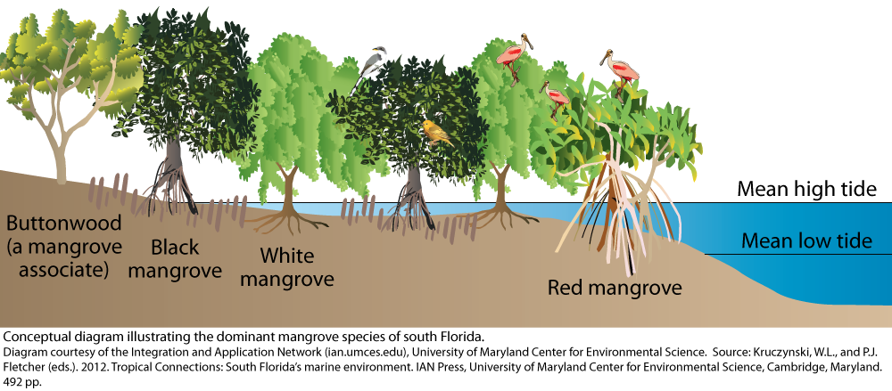
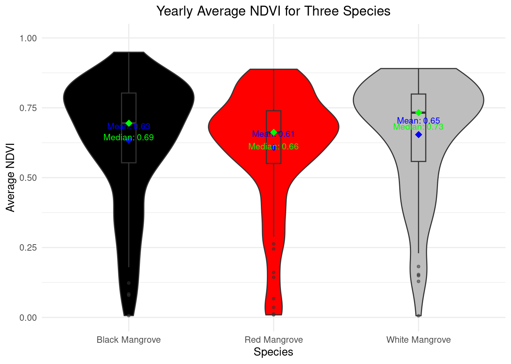
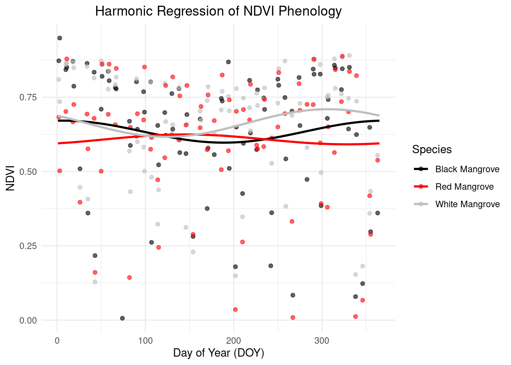

library(terra)
library(ggplot2)
library(sf)
library(leaflet)
library(RColorBrewer)
library(googledrive)
library(dplyr)Phenology of Mangroves
Fall 2024 GEO 511 Final Project
Introduction
Mangrove forests are salt-tolerant trees and shrubs that thrive in intertidal zones of tropical and subtropical regions (Vaiphasa et al. 2005). These ecosystems are highly valued as blue carbon reservoirs and natural coastal protection systems (Macreadie et al. 2021). Within mangrove ecosystems, different species display significant diversity in tree structures, growth strategies, and environmental adaptations. While mangroves are evergreen, remote sensing observations reveal that distinct species exhibit varying temporal patterns in the onset, persistence, and greenness of their growth stages.
This study aims to characterize the phenological patterns of three mangrove species: red mangrove (Rhizophora mangle), white mangrove (Avicennia germinans), and black mangrove (Laguncularia racemosa) in Everglades National Park, Florida. To be more specific, high-temporal-resolution remote sensing data from the Harmonized Landsat and Sentinel (HLS) dataset for 2023 will be used to extract Normalized Difference Vegetation Index (NDVI) values, enabling a detailed analysis of the phenological differences among these dominant species.

Materials and methods
To extract phenological information of three mangrove species from remote sensing-based observation, we need:
Materials
Harmonized Landsat and Sentinel (HLS) dataset
The HLS product integrates data from the Landsat 8 (or Landsat 9) and Sentinel-2A (or Sentinel-2B) satellites, producing a harmonized surface reflectance dataset with a 30-meter spatial resolution. Moreover, HLS includes a Quality Assurance (QA) band, which provides data quality filters and masks for clouds, cloud shadows, and water bodies. To generate time series NDVI from HLS dataset, red and near inf-red bands are collected.
Geographical location of mangrove samples
The geographical information of three mangrove species are collected from Project: The Vegetation of Everglades National Park: Final Report (Spatial Data) (Ruiz and Others 2021). 10 samples of each three mangrove species (red mangrove, white mangrove, and black mangrove) are extracted from this final report.
Normalized Difference Vegetation Index
NDVI is widely used to monitor vegetation health and phenological changes over time. The formula is:\[ \text{NDVI} = \frac{(NIR - RED)}{(NIR + RED)} \]
Harmonic Regression
Harmonic regression is a statistical technique that fits sine and cosine functions to data and is adept at identifying and modeling the cyclical variations inherent in time series with periodic patterns.\[ y_t = \beta_0 + \sum_{k=1}^{K} \left( \beta_{k} \cos\left(\frac{2\pi k t}{T}\right) + \gamma_{k} \sin\left(\frac{2\pi k t}{T}\right) \right) + \epsilon_t \]
Where:
- \(y_t\): The observed value at time \(t\).
- \(\beta_0\): The intercept or constant term in the model.
- \(\beta_k\): The coefficient for the cosine term corresponding to the \(k\)-th harmonic.
- \(\gamma_k\): The coefficient for the sine term corresponding to the \(k\)-th harmonic.
- \(T\): The period of the data (e.g., the number of days in a year if the data is annual).
- \(t\): The time point or index (often representing the day of the year, etc.).
- \(K\): The total number of harmonics (sinusoidal terms) included in the model, usually based on the periodicity of the data.
- \(\epsilon_t\): The error term at time \(t\), capturing the residual variability in the data that is not explained by the harmonic components.
Methods
Install and load necessary packages
This study needs packages related to image processing, such as: terra, sf, and googledrive; moreover, packages related to result presentation are required, including ggplot2, leaflet, dplyr, and RColorBrewer.
Prepare three mangrove species samples
The distribution of three mangrove species samples in our study area is as shown in the following:
# Leaflet is used to present the goegraphical locations of three mangrove species.
colors <- c("Black Mangrove" = "black",
"White Mangrove" = "white",
"Red Mangrove" = "red")
leaflet() %>%
addTiles() %>%
addCircleMarkers(data = black_mangrove,
color = "black",
radius = 5,
popup = ~paste("Black Mangrove<br>", as.character(geometry))) %>%
addCircleMarkers(data = white_mangrove,
color = "white",
radius = 5,
popup = ~paste("White Mangrove<br>", as.character(geometry))) %>%
addCircleMarkers(data = red_mangrove,
color = "red",
radius = 5,
popup = ~paste("Red Mangrove<br>", as.character(geometry))) %>%
addLegend("bottomright",
colors = colors,
labels = names(colors),
title = "Mangrove Samples")
The downloaded HLS images are uploaded to Google Drive, we can access this data folder through ID. Then, we will collect band 4 and band5 from the dataset. Partial code is presented as following:
# drive_auth() for first time to link Google Drive from R, we should do this authentication
HLSImages_Folder_ID <- "MYGOOGLEFOLDERIDHERE"
HLS_Everglades <- drive_ls(as_id(HLSImages_Folder_ID))
HLS_band4 <- HLS_Everglades %>% filter(grepl("_B04_", name))
HLS_band5 <- HLS_Everglades %>% filter(grepl("_B05_", name))
# extract DOY from HLS_band4$name
extract_doy <- function(names_column) {
doy_values <- gsub(".*_doy(\\d{7}).*", "\\1", names_column)
return(as.numeric(doy_values)) # convert it to numeric
}
# Add it to DOY column in HLS_band4 and HLS_band5
HLS_band4$DOY <- extract_doy(HLS_band4$name)
HLS_band5$DOY <- extract_doy(HLS_band5$name)
# Initial the results file (extracted band 4 and band 5 values) as a list
HLS_band4$download_link <- sapply(HLS_band4$drive_resource, function(x) x$webContentLink)
HLS_band5$download_link <- sapply(HLS_band5$drive_resource, function(x) x$webContentLink)
band4_rasters <- lapply(HLS_band4$download_link, function(link) rast(link))
band5_rasters <- lapply(HLS_band5$download_link, function(link) rast(link))Extract phenology from time-series HLS
NDVI values were retrieved for mangrove species sampling points. The extracted data were organized into a tabular format, with rows representing dates and columns representing NDVI values for each sample point.
Harmonic regression was employed to model the seasonal patterns in NDVI data. The fitted harmonic regression curves were plotted alongside the observed NDVI data points to visualize seasonal trends.
Results
Average NDVI
The NDVI value ranges are shown in the following graph.Among three mangrove species, red mangrove present the lowest average NDVI through the year 2023 (0.61), while white mangrove presents the highest average NDVI (0.65).Moreover, black mangrove presents highest peak NDVI through the year compared to other two mangrove species.

Pheonogy demostration based on harmonic regression
We used harmonic regression to generate descriptive phenological curves as following. We observed that many points fall outside the normal range of mangrove NDVI values. These outliers may be caused by cloud cover or water inundation.By observing the current results, the onset time of Red Mangrove appears to be earlier compared to the other two mangrove species.

Conclusions
This study utilized time-series HLS data on 2023 to analyze the phenology of three mangrove species in Everglades, Florida. To be more specific, I applied harmonic regression to generate phenology based on time-series NDVI. From the resluts, we can see that different mangrove species present different average greenness (average NDVI) and pheonogy through the year. Moreover, to refine this study, we can filter the image pixels influenced by clouds and tides. In conclusion, this study help in understanding the dynamics within one mangrove ecosystem, aiding conservation efforts and the management of coastal ecosystems in the face of climate change.
References
Macreadie, Peter I, Micheli DP Costa, Trisha B Atwood, Daniel A Friess, Jeffrey J Kelleway, Hilary Kennedy, Catherine E Lovelock, Oscar Serrano, and Carlos M Duarte. 2021. “Blue Carbon as a Natural Climate Solution.” Nature Reviews Earth & Environment 2 (12): 826–39.
Ruiz, P. L., and Others. 2021. “The Vegetation of Everglades National Park: Final Report (Spatial Data).” National Park Service.
Vaiphasa, Chaichoke, Suwit Ongsomwang, Tanasak Vaiphasa, and Andrew K. Skidmore. 2005. “Tropical Mangrove Species Discrimination Using Hyperspectral Data: A Laboratory Study.” Estuarine, Coastal and Shelf Science 65 (1-2): 371–79. https://www.sciencedirect.com/science/article/pii/S0272771405002179?casa_token=ll3Vc0CbiUIAAAAA:9686yHBe82f_NFBuVg7i7I3nEuuzCJriTf1HlMg4L3tSG5Le951jE601PoPP3g_JfwrmE9YKhg.